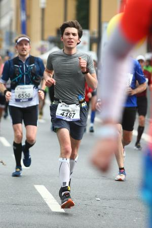

Frankfurt Marathon 2017
I’ve just finished my first marathon in Frankfurt. Frankfurt is one of the biggest running events in Germany with about 11k runners. The atmosphere during the race was phenomenal due to the 500 000 cheering fans at the course. With a finishing time of 3:28h I managed to reach my goal of staying under 3:30h. In the following are some impressions.
Number pick up

Notes on my hand
When I am really exhausted I sometimes forget how fast I need to run to reach my goal. That’s why I wrote it down on my hand. 
During the race

I think this was at ~30km. I already look quite tired ;)
Finish

Next year I want to finish a marathon in under 3:15h.
As always, I would love to hear your feedback!
Shoot me an email: info(at)janruettinger.com